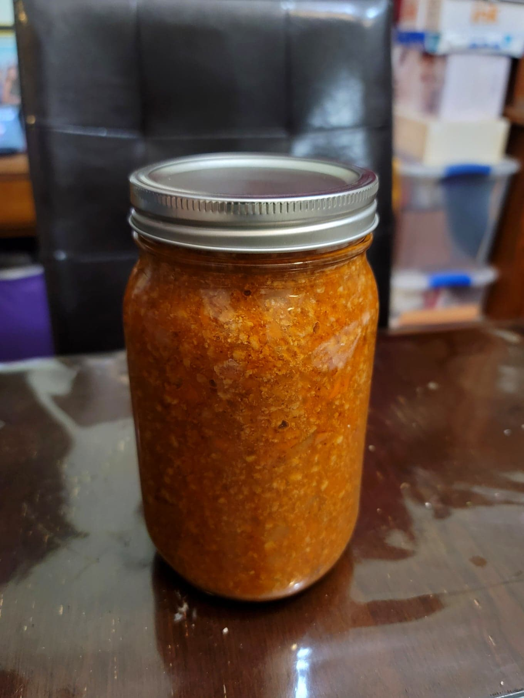

Bolognese Sauce

Ingredients:
- 1 1/2 lb Ground pork
- 1 1/2 lb Ground beef, 80%
- 4-8 oz Pancetta, diced
- 1 tbsp Butter
- 1 tbsp Olive oil
- 1/2 tsp Salt
- 1/4 tsp Black pepper
- 1 large Onion (11 oz), diced
- 1 large Carrot (6 oz), minced
- 2 stalks Celery, minced
- 1 cup White wine, or Red wine
- 28-34 oz Passata, or Tomato sauce/purée
- 1 cup Milk
- 1 cup Beef stock, low sodium, or as needed
Instructions:
- Heat the olive oil and butter in a large pot over medium-high heat. Add in the beef, pork, pancetta, salt, and pepper and sauté until completely cooked 5-10 minutes.
- Add in the onion, celery, and carrots. Sauté for about 5-7 minutes or until the onions become translucent.
- Add the wine and let the alcohol cook out for about 3 minutes. Then stir in the passata, milk, and beef stock. Bring to a boil and then reduce the heat to a low simmer. Partially cover and cook for 4 hours, stirring often.
- After 4 hours, check for desired consistency. If too thin, cook uncovered over high heat, stirring constantly, until it achieves the desired thickness. If too thick, stir in more beef broth until the desired consistency.
- Use immediately, or store in bottles in the fridge.